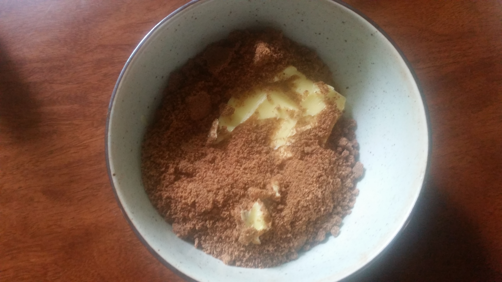
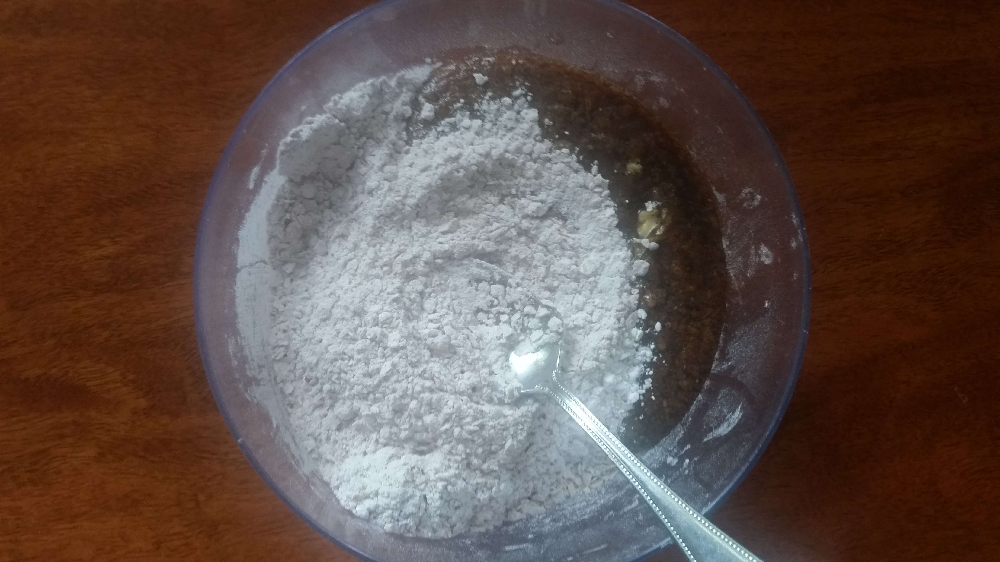
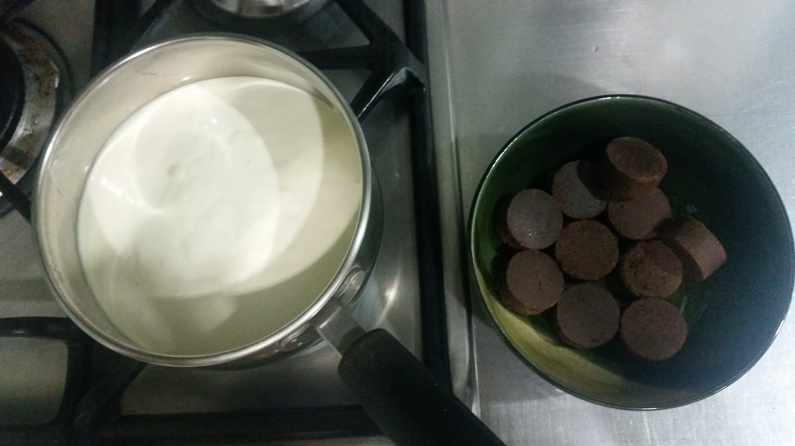
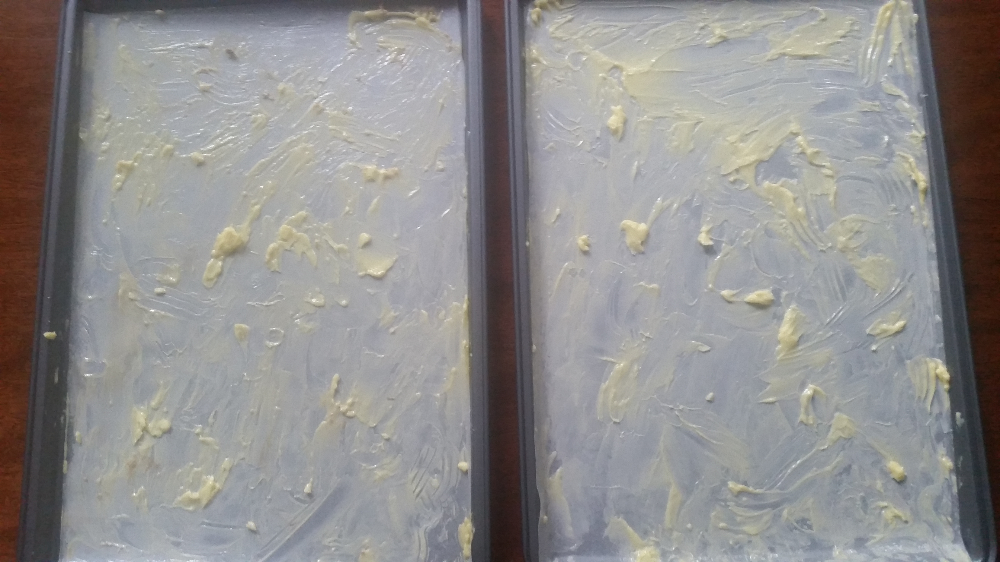
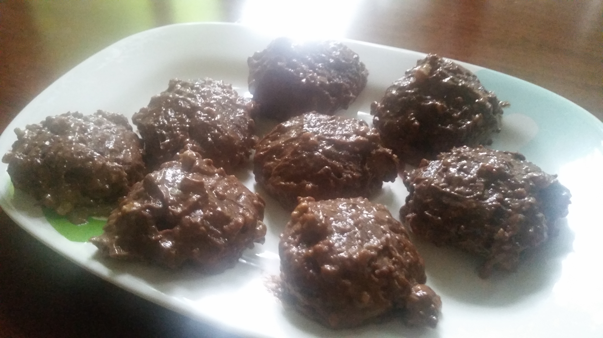

Ingredients
- 3/4 cup / 151 g butter, unsalted (Magnolia Butter)
- ½ cup / 125 ml muscovado sugar (Nature’s Muscovado Specialty Sugar)
- ½ cup / 125 ml coco sugar (Coco Natural Organic Coco Sugar)
- 1 piece. whole egg at room temperature
- 1 tsp. vanilla extract (McCormick Vanilla Flavor)
- ¼ cup high fructose Corn Syrup (Peotraco)
- 2 cups all purpose flour (Magnolia Flour)
- 2 cups oatmeal (Quaker Instant Oatmeal Original)
- 2 teaspoon cocoa (Peotraco Premium Cocoa Powder)
- 6 tablespoon marshmallows (Mello Fluffy Assorted Softmallow)
- 200g cacao tablets (Alfonso’s Hot Chocolate Tablea)
- 750 ml Cream (Nestle All Purpose Cream)
- 1 teaspoon. baking soda (Arm & Hammer Pure Baking Soda)
- 1 teaspoon baking powder (Queen Double Acting Baking Powder)
- ½ teaspoon iodized fine salt (McCormick Iodized Salt)
Procedure
- The butter and sugar, both at room temperature, were first mixed together until they became light and fluffy using white plastic spatula. 
- The eggs, the vanilla extract and the corn syrup were then added to the butter- sugar mixture until well-blended.
- The flour, baking soda, baking powder were all sifted using a strainer. On a separate bowl, the dry ingredients were combined together: flour, oatmeal, cinnamon powder, baking soda, baking powder, fine salt.
- Afterwards, the wet and dry ingredients were combined and mixed until the new mixture became doughy. 
- For the coating, the cacao tablets were melted in hot cream for 20 minutes at 25 degrees Celsius until the texture became brownish liquid. The liquid was placed on a small bowl. The marshmallows were sliced to small bits and added to the cacao liquid and the bowl was stored in the refrigerator for cooling. 
- The dough mixture was molded into small circular shaped pieces using an ice cream scooper.
- 2 sheets of non-stick wax paper were placed on 2 metal baking trays. Salted butter was brushed on the baking trays so that the cookie batter would not stick. 
- The cookies were baked in batches of 2 with 12 cookies per batch. Batch 1 was baked for 14:30 minutes while Batch 2 was baked for 15:00 minutes.
- Each baked cookie was dipped into the bowl containing the cacao and marshmallows to give it a glazed look and was stored in the refrigerator so that the melted cacao marshmallow mixture coating would solidify. 


Feedback
- Texture - soft/high moisture content so difficult to handle and pack.
- Taste and Flavor - almost perfect balance.
- Appearance - still not very appealing as the cookies appear too wet
Recommendations
- Cookies can be baked in four batches. Each batch of cookies will have a different baking time.
- It is better to take a tablespoon of cacao mixture and spread it on a plate. Then a cookie can be mopped on the mixture to make it less wet. Perhaps a set of cookies can receive a full coating and other set can receive a full coating of the cacao mixture.
- To have a better tasting of the cacao mixture, it can be melted on 500 ml of cream instead of 700 ml.
References
COPYRIGHT 2018 ALL RIGHTS RESERVED. THE FOODIE CRAFTSMAN. This website is for educational purposes only. CONTACT US Email: thefoodiecraftsman@gmail.com | Tel: +639178151032